|
관리자는 특정 사용자에게 사용자 권한을 ’Admin‘으로 설정할 수 있다. 사용자 권한은 개별 프로젝트의 메뉴, 문서 권한과 달리 모든 프로젝트에 공통적용 된다. ’Admin’ 권한이 설정된 사용자는 각 프로젝트 관리자와 동일한 기능을 활용할 수 있다. 또한, ‘Admin’ 권한을 가진 사용자는 SILKROAD 운영 및 전체 프로젝트, 사용자 관련 설정할 수 있다.
① 사용자 권한 ‘Admin’이 부여된 사용자 계정으로 로그인 해 우상단 ID를 클릭한다.
|
② ‘Settings’을 클릭하고 ‘Admin’을 클릭한다.
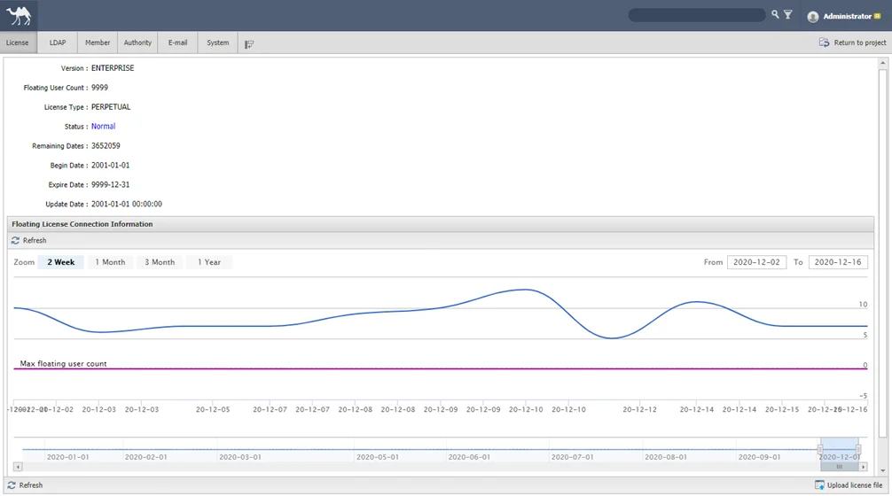 |
SILKROAD 라이선스 정보를 열람하거나 업데이트할 수 있다. 라이선스 기간이 만료되는 경우 실크로드 사용이 제한되어, 라이선스 재발급 및 업데이트를 필요로 한다.
① 실크로드 좌측 상단의 메뉴에서 ‘License’를 선택한다.
② ‘Update license file’ 버튼을 클릭한다.
③ License Wizard’창이 생성된다.
④ File 항목의 ‘Select license file’ 버튼을 클릭한다.
⑤ 탐색기 창에서 라이선스 파일을 선택한다.
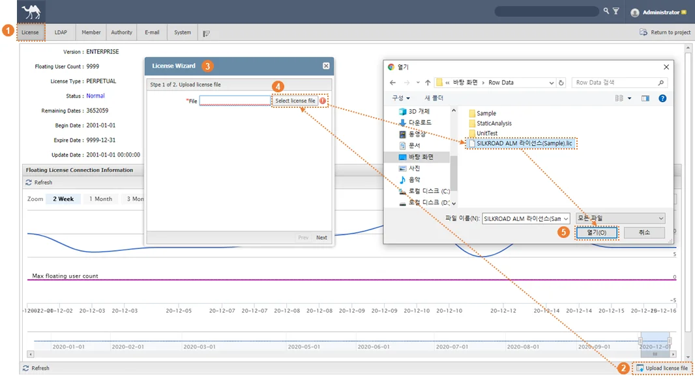 |
⑥ ‘Next’ 버튼을 클릭한다.
⑦ ‘Apply & Refresh’ 버튼을 클릭한다.
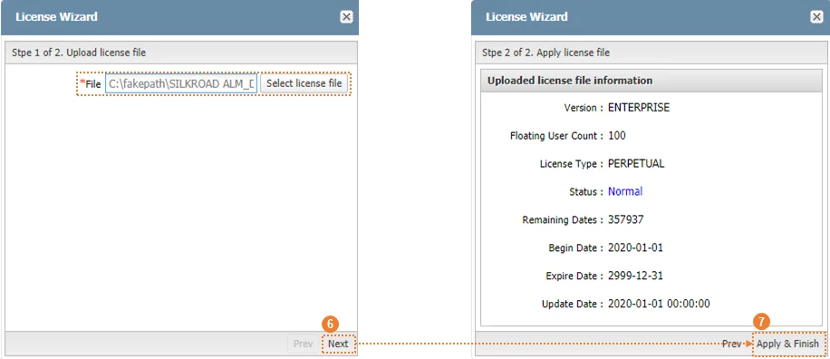 |
사용자(고객사)의 조직 내부 서버에 따라 설정이 다르며, 사용 중인 내부 서버에 맞게 커스터마이징할 수 있다. 실크로드 배포, 설치 시 설정하고 유지된다.
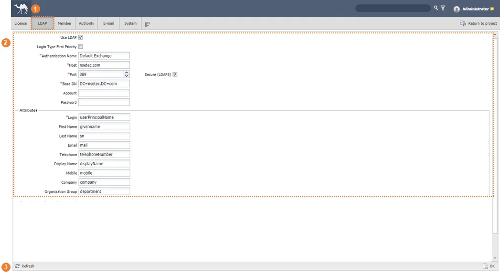 |
구분 | 명칭 | 설명 |
| LDAP 메뉴 | LDAP server and Attributes 정보 수정 페이지로 이동 |
| LDAP Server & Attributes | LDAP server and Attributes 정보 수정 |
| Tool Bar | Refresh 및 Save 기능 |
① 실크로드 좌측 상단의 메뉴에서 ‘LDAP’을 선택한다.
② LDAP 환경 설정 정보를 입력한다.
③ LDAP과 SILKROAD의 Attributes를 매칭한다.
④ ‘OK’ 버튼을 클릭한다.
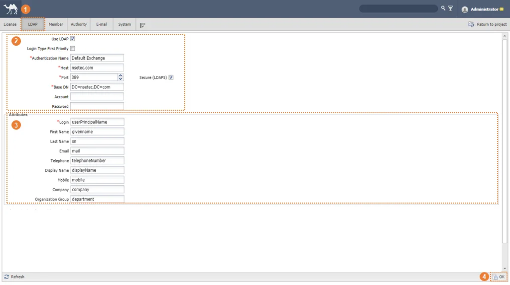 |
실크로드에 가입된 모든 계정(LDAP, Web) 관리 기능을 제공한다. 신규 가입 사용자의 실크로드 사용을 승인(Approval)하고, 사용자의 정보를 열람/수정할 수 있다. 또한, 생성된 계정을 삭제하거나 신규 사용자 생성도 가능해 실크로드를 사용하는 사용자 계정을 관리할 수 있다.
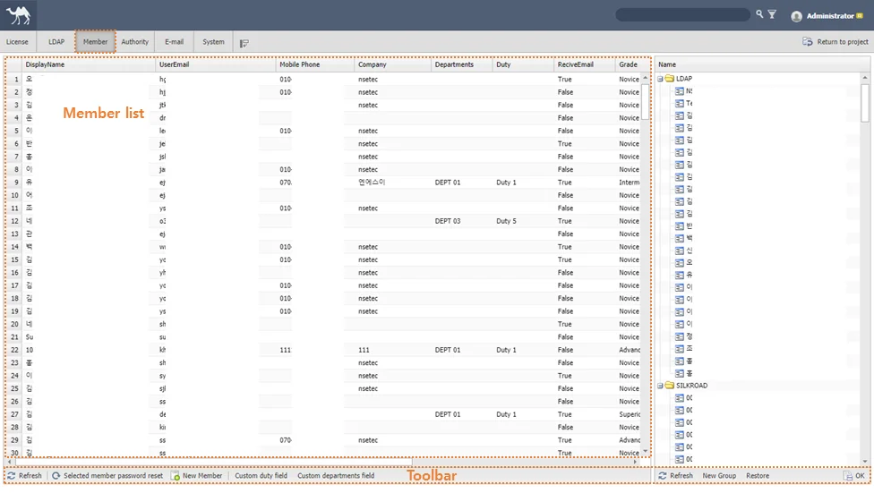 |
실크로드에 가입된 사용자는 필수 입력 정보(이름, 이메일 등)와 선택 입력 정보(전화번호, 회사 이름 등)를 입력해야 한다. 사용자 정보창에서는 해당 정보를 열람하고, 수정할 수 있다.
① 대상 사용자 명을 더블클릭한다.
② 사용자 정보를 수정한다.
- Display Name : 사용자명 (필수 정보)
- User Email : 이메일 주소 (필수 정보)
- Name : 이름 (필수 정보)
- Last Name : 성 (필수 정보)
- Telephone Number : 연락처
- HP : 연락처
- Company : 회사명
- Grade : 사용 수준
- Description : 사용자 관련 설명
③ ‘OK’ 버튼을 클릭한다.
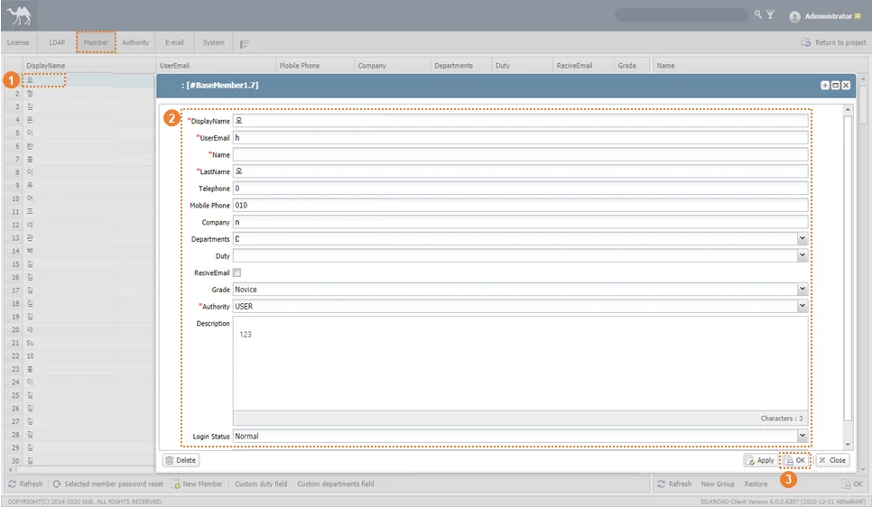 |
사용자 권한은 ‘Admin’ 과 ‘User’ 권한으로 나뉜다. ‘Admin’ 권한을 가진 사용자는 개별 프로젝트의 메뉴, 문서 권한에 영향을 받지 않고 ‘Admin’ 권한을 보장 받아 각 프로젝트 관리자와 동일한 기능을 활용할 수 있다. ‘User‘ 권한을 가진 사용자는 참여된 프로젝트의 권한과 메뉴, 문서 권한에 영향을 받는다.
① 권한 설정 대상 사용자 명을 더블 클릭한다.
② ‘Authority‘ 콤보 박스를 클릭하고, 권한을 선택한다.
③ ‘OK’ 버튼을 클릭한다.
|
사용자는 정상적인 실크로드 사용 시 ‘Normal’ 상태(Status)를 유지한다. 단, 관리자 설정에 의해 실크로드를 사용할 수 없는 상태(Status)로 변경될 수 있다. 이 때, 사용자 계정 정보 창을 통해 실크로드 사용 가능 상태(‘Normal’)로의 변경이 필요하다.
① 대상 사용자 명을 더블 클릭한다.
② ‘Login Status’ 콤보 박스를 클릭하고, ‘Noraml’을 선택한다.
‘OK’버튼을 클릭한다.
(Pending Approval) : 관리자가 시스템 설정을 통해 가입 승인을 요구한 상태에서, 신규 계정을 생성한 사용자는 실크로드를 사용할 수 없는 상태가 된다.
(Block) : 관리자가 시스템 설정을 통해 정한 횟수 이상 비밀번호를 잘못 입력한 사용자는 실크로드를 사용할 수 없는 상태가 된다. 이 때, Incorrect Password 의 횟수를 ‘0’으로 변경하는 절차를 동반해야 한다.
(Block) : 관리자가 시스템 설정을 통해 정한 기간 이상 실크로드에 접속하지 않은 사용자는 실크로드를 사용할 수 없는 상태가 된다.
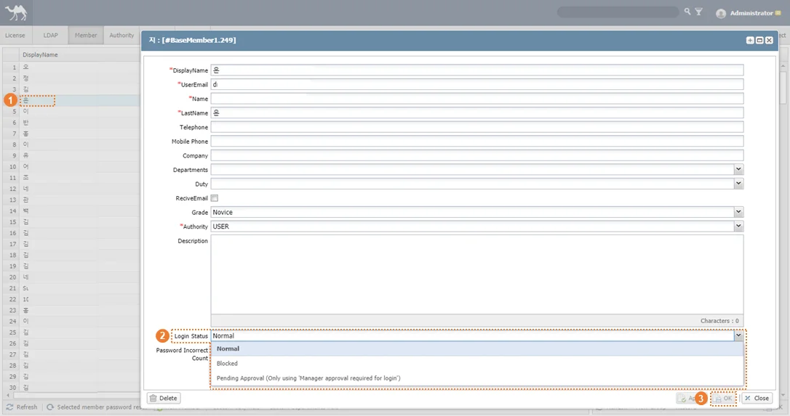 |
특정 사용자의 ‘Status’를 ‘Block‘으로 설정해 실크로드의 사용을 제한할 수 있다. |
사용자 계정을 SILKROAD에서 삭제한다. 삭제된 사용자 계정은 관련 정보가 모두 함께 삭제되어 이후 동일한 계정으로 사용자 등록을 해도 프로젝트 참여 여부 및 권한은 유지되지 않는다.
① 삭제하고자 하는 사용자명을 더블 클릭한다.
② ‘Delete’ 버튼을 클릭하여 사용자를 삭제한다.
|
Web 계정 사용자의 로그인 패스워드를 초기화할 수 있다.(LDAP 생성 계정 제외)
① 대상 사용자명을 클릭한다.
② ‘Selected Member Password Reset’ 버튼을 클릭한다.
③ 새로운 패스워드를 입력한다.
④ ‘OK’ 버튼을 클릭한다.
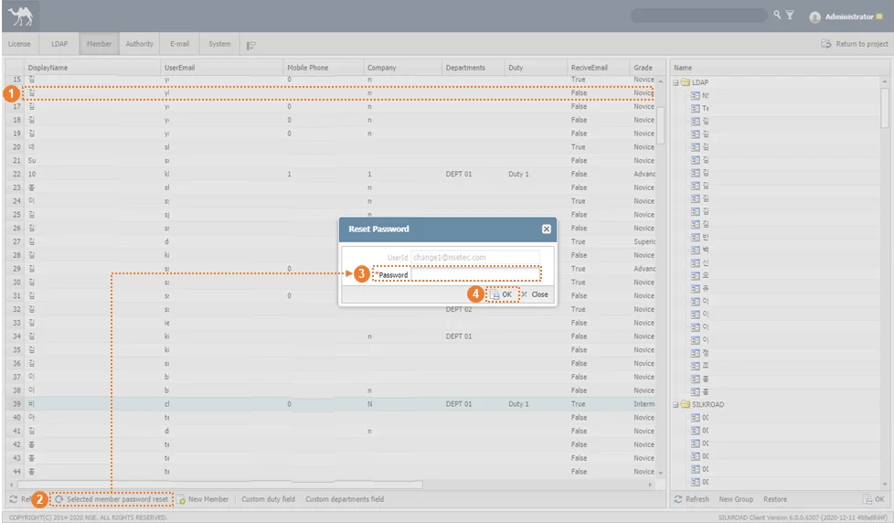 |
일반적인 가입 절차를 거치지 않고 사용자 계정을 생성할 수 있다. 생성된 계정은 Web 계정으로 사용자에 의해 Password 변경이 가능하다.
① 'New Member' 버튼을 클릭한다.
② User ID, Last Name(성), First Name(이름), Password(비밀번호)를 입력한다.
③ ‘OK’ 버튼을 클릭하여 멤버 추가를 완료한다.
|
사용자(고객사)의 체계에 따라 부서 및 직위를 생성하고, 수정한다. 사용자는 관리자가 생성한 부서 및 직위 정보를 이용해 선택 정보를 입력할 수 있다. 또한, 특정 부서 및 직위를 기본 설정(Default)하여 계정을 생성하는 사용자에게 기본 값으로 부여할 수 있다.
① ‘Custom Department Field’ 버튼을 클릭한다.
② ‘Add’ 버튼을 클릭한다. (Delete 버튼을 통하여 부서 정보를 삭제할 수 있다.)
③ 부서 정보를 입력한다. (필요시 부서를 선택 해 기본 설정(Default)을 체크 한다.)
④ ‘OK’ 버튼을 클릭 한다.
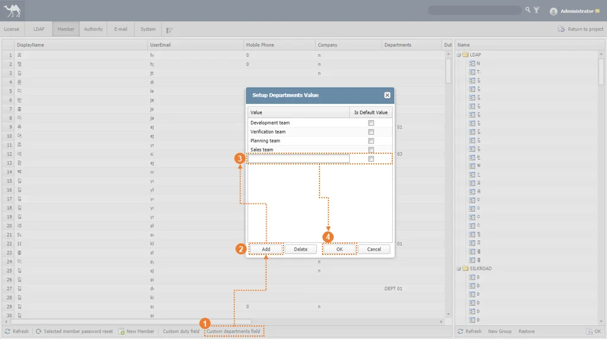 |
① ‘Custom Duty Field’ 버튼을 클릭한다.
① ‘Add’ 버튼을 클릭한다. (Delete 버튼을 통하여 직위 정보를 삭제할 수 있다.)
② 직위 정보를 입력한다. (필요시 직위를 선택 해 기본 설정(Default)을 체크 한다.)
③ ‘OK’ 버튼을 클릭 한다.
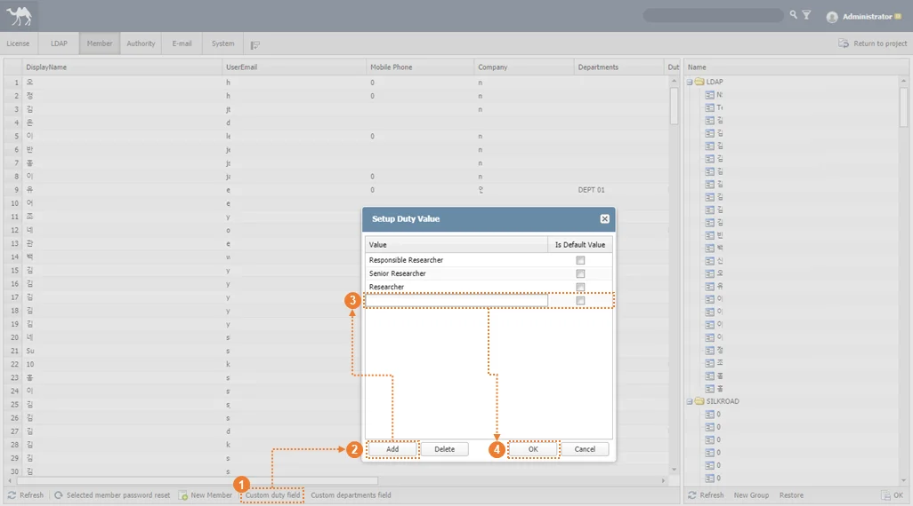 |
SILKROAD UserType(ADMIN, PM(MEMBER, SUPER)에 따라 Participant, Role&authority, Menu, CustomFiled, WorkFlow 의 접근을 허용(체크)/제한(체크 해제) 할 수 있다. 사용자에게 접근이 허용되지 않은 기능은 각 프로젝트별 프로젝트 설정(Project Setting) 창에 표시되지 않아 접근할 수 없게 된다.
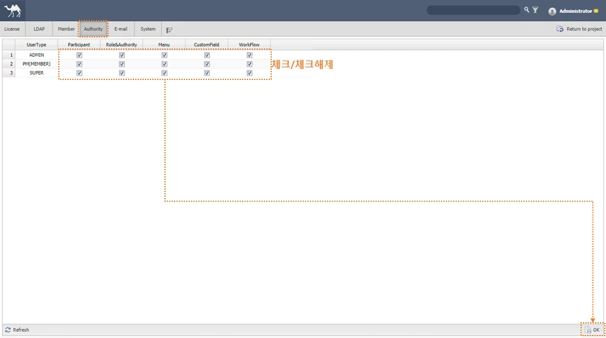 |
메일 연동을 설정한다. 실크로드 배포 및 설치 시 수행되고 유지된다.
|
구분 | 명칭 | 설명 |
| SMTP Server URL | 단순 메일 전송 프로토콜을 위한 서버 URL |
| SMTP Server Port | 단순 메일 전송 프로토콜을 위한 서버 포트 |
| Admin Mail ID | 사용할 Admin 메일 ID |
| Admin Mail Password | 사용할 Admin 메일 패스워드 |
| Save | 입력한 데이터 저장 |
실크로드 시스템 로그인 관련 설정과 메인 메뉴 명칭 변경, 로그인 화면 이미지 변경 기능 등을 지원하고, 사용자의 로그인 정보를 제공한다.
|
구분 | 명칭 | 설명 |
Main Menu Settings | SILKROAD HOME의 Project/Board/Storage 의 명칭 수정 | |
Login Screen Settings | 로그인 화면의 배경 이미지 변경 | |
| Security Notice Settings | 보안 공지 메시지 및 발생 인터벌 설정 |
| Reminder Settings | All-Day 설정 일정의 알림 기준 시간 설정 |
Manager approval required for login | 신규 계정 생성 시 관리자의 승인 필요 여부 선택 | |
| [ ] days not logged in, block access | 미로그인 [ ]일 이후 해당 계정 차단 |
[ ] days before blocking, send e-mail | 계정 차단 [ ]일 이전 내용 메일 송부 | |
| Over [ ] times of password miss matching, block access | 패스워드 [ ]차례 오류 시 계정 차단 |
Over [ ] minute of no input, log out(after 1minute warning) | [ ] 분간 입력(마우스, 키보드)이 없을 시 자동 로그아웃 | |
Use password complexity | 패스워드 복잡성 사용 여부 | |
| Login History Graph | 시스템 로그인 이력 |
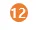 | Login History Grid | 시스템 로그인 이력 |
SILKROAD HOME의 메뉴 Project/Board/Storage 의 명칭을 수정한다.
실크로드 로그인 화면의 배경 이미지를 기본 제공 이미지에서 사용자 설정 이미지로 변경한다. (최대 5MB, 380*340 지원)
각 프로젝트에서 설정하는 메뉴/문서별 보안 설정에 따라 발생하는 알림 메시지 내용을 지정하고 메시지 발생 인터벌을 설정한다.
캘린더에 등록된 All-Day 설정 일정의 알림 기준 시간을 설정한다. 24시간 중 특정 시간을 기준 시점으로 지정하면, 일정에 설정된 리마인더가 해당 시간 기준으로 메신저 메시지를 전송한다.
신규 계정 생성 시 관리자의 승인 필요 여부 선택한다. 옵션을 미적용 시 계정 생성 후 즉시 로그인이 가능하고, 옵션 적용 시 계정 생성 후 관리자의 승인을 받은 뒤 로그인이 가능하다.
설정한 [ ]일 동안 로그인 하지 않은 사용자의 계정을 차단한다.
계정 차단 예정일로부터 설정한 [ ]일 전 안내 메일을 전송한다.
사용자가 로그인 중 설정한 [ ]회수 이상 비밀 번호 입력 오류 시 해당 계정을 차단한다. 차단된 계정은 관리자에 의해 사용자 정보창의 Login Status 변경을 통해 복구한다.
설정한 [ ] 분간 입력(마우스, 키보드)이 없을 시 안내 팝업을 생성하고, 1분간 대기 중 로그인 지속을 선택하지 않을 때 로그아웃을 실행한다.
패스워드 복잡성 사용 옵션 적용 상태를 설정한다. 비밀번호 조합 사용(영문, 숫자, 특수문자를 조합해 최소 9자 이상 설정), 사용자 ID와 PW 동일 제한, 동일 문자 3자 이상 사용 제한, 연속된 문자 및 순자 패턴 제한의 하위 옵션을 적용할 수 있다.
시스템 로그인 이력을 그래프로 제공한다.
시스템 로그인 이력을 그리드로 제공한다.
번호 | 메시지 | 설명 | 해결방안 |
|---|---|---|---|
1 | Value cannot be null. Parameter name : s | 정상적으로 생성되지 않은 라이선스 파일을 등록할 경우 | 정상적인 라이선스 파일을 재등록 |
2 | |||
3 | |||
4 | |||
5 | |||
6 | |||
7 | |||
8 | |||
9 |